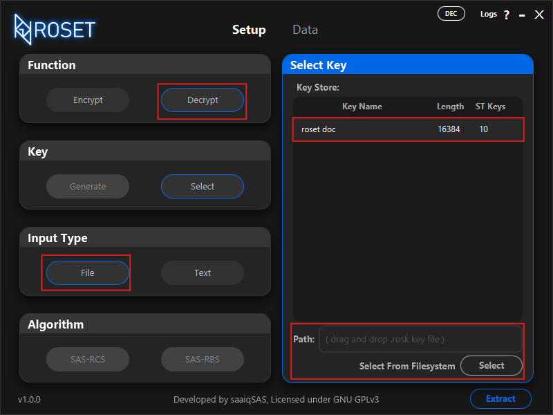
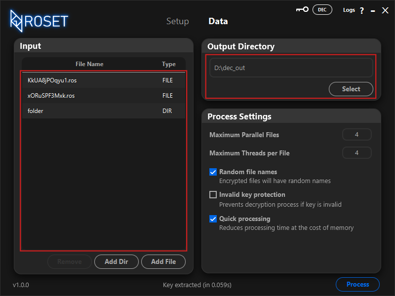
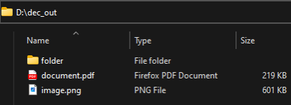

6. Decrypting Files
by: saaiqSAS
Last Updated: 19/2/2025
In this section, we will walk you through the steps to decrypt files that has been encrypted with the ROS Encryption Tool,
using the appropriate key.
To begin, select Decrypt under the Function section, and then choose the File option under the Input Type section.
In the Select Key section, you can either pick the correct key from the Key Store if it’s available, or if the key is located elsewhere on your system,
you can either use the Select button to browse for it or simply drag and drop the key file into the Path field.
(Fig6.1)
 Fig.6.1
After selecting your key, click the Extract button located at the bottom right. Once the key is extracted into memory, you will be automatically redirected to the Data tab.
In the Input section, you can easily drag and drop the files or folders you wish to encrypt. Alternatively, you can use
the Add File button to add files, or the Add Dir button to add directories/folders. (Fig6.2)
Once all the files you want to decrypt are listed in the table in the Input section, you can choose where the decrypted output should be saved.
In the Output Directory section, simply drag and drop or select a folder/directory to store the decrypted files. (Fig6.2)
Additionally, you can customize settings in the Process Settings section to optimize the encryption process according to your needs.
If you're looking for faster processing times, increasing the Maximum Threads per File can help. For better performance when processing large batches of files,
consider increasing the Maximum Parallel Files. Keep in mind that raising these values will require more system resources, such as memory and processing power,
so adjust them according to your system’s capabilities.
 Fig.6.2
Once everything is set, click the Process button to begin decrypting your files.
A decrypted copy of your files will be created in the output directory or folder you specified. (Fig6.3)
 Fig.6.3